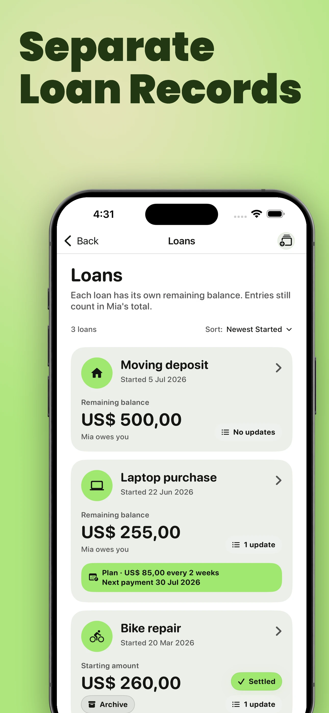
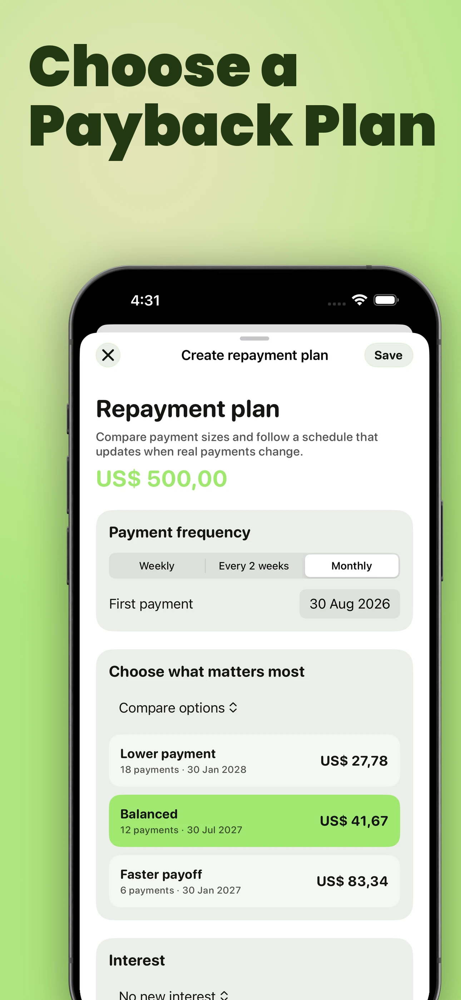
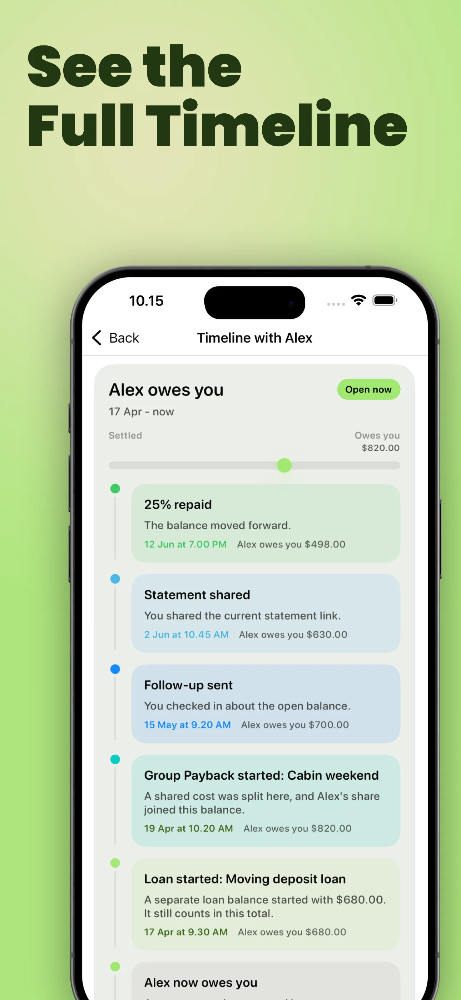

2016–2026
Ten years of clearer money between people.
You Owe Me launched on August 26, 2016, with one focused idea: when money passes between people, the record should stay clear. Ten years later, the app has grown from everyday IOUs to separate loans and repayment plans—but that idea has never changed.
This is the story of what changed, what stayed the same, and why You Owe Me is still being actively built today.
- Launched August 26, 2016
- Maintained through ten years of iOS change
- Available in 10 languages
- Still being actively developed in 2026
One idea
The app changed. The goal did not.
Money between friends, family, roommates, partners, and clients becomes harder when memory is the system. A small amount can be simple at first, then become unclear after another expense, a partial repayment, a changed date, or one conversation too many.
The first version organized each person’s dated entries and running balance in one place. Every later capability addressed a deeper version of the same questions: what happened, what remains, and what comes next.
What happened
Record the amount, date, direction, and reason in language that remains understandable later.
What remains
Keep the current balance and the history behind it easy to check.
What happens next
Make the next payment, reminder, update, or calm message easier to see.
You Owe Me is a calm record and communication layer for money between real people. It does not lend money, move payments, collect debts, replace accounting, or create a legal contract.
The Clarity Ledger
A decade of clearer records
The app did not grow in a straight line. Some years rebuilt the everyday experience. Others focused on reliability as iPhones and iOS changed. The most recent years added much deeper structure. Across every era, the standard stayed the same: make the money story easier to understand.
-
2016
Remember the balance
What people needed
Stop relying on memory for who paid, who borrowed, and what remained.
What You Owe Me added
People, entries, currencies, dates, and a running balance.
What stayed true
One understandable record with each person.
-
2019
Keep the record useful over time
What people needed
Handle recurring bills, carry history forward, and keep the record useful beyond a single moment.
What You Owe Me added
Recurring entries, exports, shareable history, and continuity across devices.
What stayed true
The record should still make sense when someone returns to it later.
-
2022
Stay clear through platform change
What people needed
Keep a long-lived app familiar and reliable as iOS and devices changed.
What You Owe Me added
Platform modernization, dark mode, clearer date grouping, and clearer direction guidance.
What stayed true
Technology should not make the money story harder to read.
-
2024
Rebuild the modern foundation
What people needed
Faster navigation, clearer direction, better performance, and a stronger base for more complex records.
What You Owe Me added
A redesigned everyday experience, clearer lent and borrowed language, performance improvements, better currency handling, sharing, and stronger visual cues.
What stayed true
Complexity should stay behind a calm everyday interface.
-
2025
Make the next action clearer
What people needed
Know when to follow up, capture records faster, handle recurring or interest-bearing situations, and say the next thing calmly.
What You Owe Me added
Stronger reminders, voice entry, percentage and fixed interest, Split Entry, statements, and more helpful message tools.
What stayed true
A useful record should reduce awkwardness, not intensify it.
-
2026
Give complex arrangements structure
What people needed
Keep important loans separate, plan around real repayments, understand the full history with someone, coordinate shared costs, and share or sync clearer records.
What You Owe Me added
Loan Records, Repayment Plans, Timeline, Group Paybacks, Live Link, Balance Sync, Spaces, supporting photos, and support for ten languages.
What stayed true
Every added layer should make the current balance and next step easier to understand.
Ten years did not turn You Owe Me into a bank or an accounting suite. It made the same personal record more capable when the real situation became more complicated.
Explore what You Owe Me can do todayThe clearest example
From “who owes what?” to a clear repayment path
A running balance is often enough for an everyday IOU or reimbursement. An important or long-running loan needs more structure: its own name, remaining balance, notes, due date, interest details, repayments, and adjustments—while still counting toward the total with that person.
A Repayment Plan connects that Loan Record to a weekly, biweekly, or monthly schedule. Real repayments do not always match the first plan. They can be partial, early, extra, or late, so the schedule stays connected to what actually happened.
That is the clearest picture of how You Owe Me grew: not by replacing a simple record, but by adding structure when a relationship needs it.
A personal loan, then and now
2016
A single entry could preserve who paid, what the money was for, and what remained.
2026
The same loan can now have its own Loan Record, repayment plan, payment history, next payment, reminders, and shareable PDF—while still contributing to the total balance with that person.
One record that stays connected as the situation changes



A Repayment Plan is a personal planning and recordkeeping tool. It does not process payments, collect money, or create a shared legal agreement between two people.
A useful record
What ten years taught us about keeping money clear
Whatever tool you use, a good record should reduce how much two people have to remember, reconstruct, or awkwardly explain later.
Name what happened.
Record the person, amount, date, direction, and reason clearly enough for either person to understand later.
Separate what matters.
Keep an important loan distinct from everyday shared expenses, even when both contribute to one overall balance with that person.
Record real repayments.
A plan stays useful when partial, early, extra, or changed payments update the record instead of being left to memory.
Keep the next step visible.
Make the remaining balance, next date or action, and next conversation easier to see.
Choose the lightest useful record
When is a note enough?
More structure is not automatically better. Use only what the situation needs.
A message or note may be enough
- One small amount and one expected repayment.
- Both people already agree on the amount and timing.
- No detailed history will be needed later.
- No reminder or follow-up is likely.
An ongoing record becomes useful
- There are multiple entries or partial repayments.
- A due date, recurring cost, interest, or repayment schedule matters.
- Either person may need to revisit what happened.
- The next step, reminder, or update needs to stay visible.
You can use these principles in a note, spreadsheet, or message. You Owe Me becomes useful when the record needs to keep changing over time.
Customer voice
Built for records people return to
The clearest proof comes from people who have relied on the app, returned to it, and watched it improve.
Continued improvement
5 out of 5 · App Store review · Italy · App version 7.0.4
“This app impresses me more and more. It keeps evolving and improving. Great job!”
Less family stress
5 out of 5 · App Store review
“I use You Owe Me to keep track of loans I give to my kids, and it’s been great. The app is very easy to use, even for someone like me who isn’t very tech-savvy. It’s taken all the stress out of tracking money between family.”
Built by listening
5 out of 5 · App Store review
“I’ve used this app for a long time. It’s the only app where the developer truly listens and responds. The interface is very easy to use, transactions are fast, and it supports many currencies, reminders, and recurring entries.”
Still being built
The tenth year was not a victory lap.
It became the app’s most active period of development. In the months leading to the anniversary, You Owe Me added Loan Records, Repayment Plans, Timeline, Group Paybacks, Live Link, Balance Sync, Spaces, supporting photos, and support for ten languages—alongside continuing performance and reliability work.
That is not a promise about an unannounced roadmap. It is evidence that the project is being actively maintained today, with deeper capability still held to the original standard: keep the record understandable.
Customer support, reviews, suggestions, and long-term use helped make that continued work possible.
Use the app
Ready to keep your own record clear?
Use You Owe Me when a balance, loan, or repayment plan needs to remain clear as it changes over time.
Thank you
Thank you for being part of the record.
Thank you for every entry recorded, every repayment marked, every review, every suggestion, and every year You Owe Me stayed on your phone.
Since 2016, You Owe Me has kept getting better.